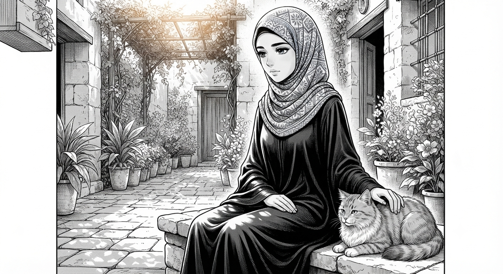
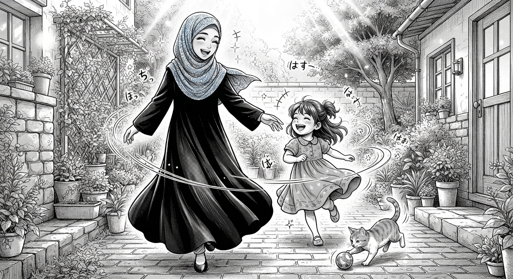

Bu yerda - issiq bir oqshom, hamma narsani soʻzsiz tushunadigan mushukcha va oddiy kunni bayramga aylantira oladigan qiz bor. Ochish uchun bosing.

Marjona sokin qiz. Bu haqiqat. Lekin sokinlik - boʻshliq degani emas. Uning sukunati ortida butun bir olam yashiringan: chuqur fikrlar, nozik tuygʻular, hech kimga koʻrsatilmaydigan mehr. Koʻpchilik shovqin bilan diqqatni oʻziga tortadi, Marjona esa - aksincha. U jim turadi, lekin uning jimligida shunday chuqurlik borki, uni sezgan odam bir umr esidan chiqarolmaydi.
Mana shu oqshom ham xuddi shunday edi. Deraza ortida kun soʻnib borardi, xona esa faqat oqshomga xos boʻlgan ajib qumral yorugʻlikka toʻlgan edi - issiq, erinchoq va bir oz sehrli. Marjona oyoqlarini tortib oʻtirgancha, tizzasida mudragan mushukni sekin siypalardi. Mushuk shu qadar ishonch bilan xurillardiki, goʻyo aniq bilardi: hozir unga aynan shu narsa kerak - hech kim gapirmasin, hech kim shoshiltirmasin, faqat shu jimlik, shu iliqlik.
Marjona koʻp gapirmaydi. Lekin har bir soʻzi - oʻylab aytilgan, har bir jimligi - mazmunga toʻla. Odamlar buni sezishadi: uning yonida bemalol boʻlish mumkin, chunki u hech qachon ortiqcha baholamaydi, hech qachon shoshiltirmaydi. U shunchaki tinglaydi, tushunadi, va oʻz vaqtida - juda kam, ammo juda toʻgʻri soʻzlar aytadi.
U turli narsalar haqida oʻylardi. Juda tez oʻtib ketgan kunlar haqida. Endigina ushalayotgan orzular haqida. Sevgan odamlari haqida - ularning har biri uning yuragida alohida burchakka ega. U hech kimga bu haqda baland ovozda gapirmaydi, lekin har bir kishi haqida qanchalar chuqur oʻylashini faqat u oʻzi biladi.
Va shu fikrlar orasida sekin-asta bir xotirjamlik keldi: hammasi toʻgʻri ketyapti. Hozir hamma narsa aniq boʻlmasa ham - hayot baribir goʻzal bir surat chizmoqda, faqat uni hali toʻliq koʻrsatmagan, xolos. Sokin odamlar koʻpincha eng chuqur ishonchga ega boʻlishadi - ular shov-shuvsiz, lekin mustahkam ishonishadi: yaxshilik albatta keladi.
Mushuk bir koʻzini ochib, unga oʻsha mushukona donolik bilan qaradi - goʻyo shunday dedi: «Jilmayib qoʻy. Sen oʻzing oʻylagandan ham yaxshi uddalayapsan». Va aynan shu daqiqada sodir boʻldi - sekin, tabiiy, hech kim uni bunga majburlamagan holda: Marjonaning lablarida tabassum paydo boʻldi.
Bu shunchaki tabassum emas edi. Buni koʻrgan har bir kishi biladi - Marjonaning tabassumi kamdan-kam, ammo juda chin. U kulganda, koʻzlari ham kulib turadi, va butun xona birdan yorishib ketadi, goʻyo quyosh xiralashgan oqshomni yana bir bor yoritib yuborganday. Odamlar bu tabassumni koʻrish uchun kutishga arziydi, deyishadi - chunki u tez-tez namoyon boʻlmaydi, lekin paydo boʻlganda hammasini unutdirib qoʻyadi.
Va shu oqshom ham - sokin, iliq, mushuk bilan toʻla - Marjonaning yuzida oʻsha noyob, haqiqiy tabassumni yana bir bor uygʻotdi. Chunki ba'zan baxt uchun katta voqealar shart emas. Faqat sevimli mushuk, mayin yorugʻlik va oʻz-oʻzi bilan tinch qolish kifoya.

Birdan eshik baland va quvnoq taqillatildi - bunday qilib faqat quvonchdan sabri chidamaydiganlar taqillatadi. Bostirmada yugurib kelganidan sochlari tarqalib ketgan, lablarida esa quloqlarigacha yoyilgan tabassum bilan Fotima turardi. «Marjona xolajon! Sogʻindim!» - va bir soniyadan soʻng xona kulgi, qadam tovushlari va kichkina shoʻxliklarning jarangiga toʻlib ketdi.
Va aynan shu yerda Marjonaning yana bir qirrasi ochiladi. Kunning katta qismida u sokin, xayolchan, oʻz ichki dunyosiga chuqur cho'mgan boʻladi. Lekin sevgan odamlari yonida - xususan, jajji jiyani yonida - u butunlay boshqacha odamga aylanadi: erkin, yengil, bolalarcha quvnoq. Goʻyo sokinlik ortida yashiringan quyosh birdan bulutlar orasidan chiqib keladi.
Mushuk darhol qulogʻini dikkaytirdi - u bu ovozni yaxshi bilardi va bu energiyani juda yaxshi koʻrardi. Bir daqiqada uchovlari - Fotima, mushuk va Marjona - bir-birlarini quvlashardi: Fotima lentani silkitardi, mushuk esa haqiqiy ovchidek zavq bilan uning ortidan sakrardi, Marjona esa ularga qarab, oʻzini toʻxtatolmay kula boshladi.
Va mana shu - Marjonaning haqiqiy kulgisi. Kamdan-kam koʻrinadigan, ammo koʻrgan har bir kishini hayratda qoldiradigan kulgi. U kulganda, avval koʻzlari kichrayadi, keyin yonoqlarida chuqurchalar paydo boʻladi, va butun yuzi - odatda shunchalik jiddiy, oʻychan boʻlgan yuzi - birdan yosh bolanikidek yorishib ketadi. Bu tabassumni koʻrgan odam bir narsani darhol tushunadi: mana bu - haqiqiy, soxtasiz baxt.
Fotima buni sezadi - u xolasining kulishini yaxshi koʻradi, shuning uchun ham tez-tez uning oldiga yugurib keladi, shuning uchun ham har safar eshikni shunchalik baland taqillatadi. Bolalar kattalarning eng chin his-tuygʻularini his qilishadi, va Fotima yaxshi biladi: Marjonaning tabassumini uygʻotish - bu eng chiroyli sovgʻa.
Marjona qattiq kuldi, shunchalik qattiqki, koʻzlarida yosh chiqib ketdi - haqiqiy, baxtli yosh. U bunday paytlarda oʻzini toʻliq unutadi: hech qanday tashvish, hech qanday sokinlik yoʻq, faqat shu daqiqa, shu kulgi, shu ikki mavjudot - bir jiyan va bir mushuk - uni shunchalar sevib, shunchalar baxtli qilishlari qoladi.
Shu payt kvartira kulgi, yumshoq panjalar va jarangdor bolakay ovozidan iborat butun bir olamga aylandi. Marjonaning tabassumi esa - xuddi quyosh nuri kabi - xonaning har bir burchagiga tarqaldi. Uni koʻrgan har bir kishi bir narsani his qiladi: bu qiz sokin boʻlishi mumkin, lekin uning yuragi - issiq, keng va mehrga toʻla.
Va bir narsa abadiy aniq boʻldi: haqiqiy baxt aynan shundan iborat - oddiy oqshomlar, yonida sevimli odamlar, koʻzlarni yumib qoʻyadigan chin kulgi va oyoq ostida oʻralashib yuruvchi mushukdan. Marjona, sening tabassuming - bu dunyodagi eng chiroyli narsalardan biri. Va u qanchalik kam koʻrinsa, shunchalik qadrli.